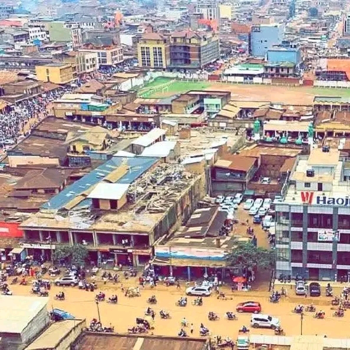

Une capitale commerçante du Grand‑Nord, entre collines et dynamisme
Butembo est une grande ville du Nord‑Kivu (RDC), considérée comme le cœur économique du peuple Nande (Yira). Elle est située à environ 1 750 m d'altitude et compte quatre communes urbaines.
Localisation Est de la RDC, Nord‑Kivu
Superficie ≈ 190,34 km²
Altitude ≈ 1 750 m
Communes Bulengera • Kimemi • Mususa • Vulamba
Climat Tropical tempéré par l'altitude
Aperçu général
Située à l'ouest du parc des Virunga, Butembo se déploie sur un relief vallonné. La ville constitue un centre d'échanges pour le Grand‑Nord, avec une forte culture entrepreneuriale et une diaspora active.
Quatre communes urbaines
Croissance urbaine soutenue
Repère majeur de la communauté Nande (Yira)

Économie & dynamiques locales
Butembo est reconnue pour son commerce dynamique (import/export régional), sa densité de PME/PMI, et ses réseaux d'affaires locaux. Des défis persistent : infrastructures, assainissement et insécurité routière.
Culture, médias & éducation
Ville au patrimoine Nande marqué, Butembo compte de nombreuses radios communautaires et plusieurs universités (UCG, UAC). La vie culturelle est dynamique, portée par des événements communautaires.
Climat & environnement
Le climat est tropical humide tempéré par l'altitude, avec saisons des pluies et périodes plus sèches. L'urbanisation soulève des enjeux de gestion des sols et des déchets.